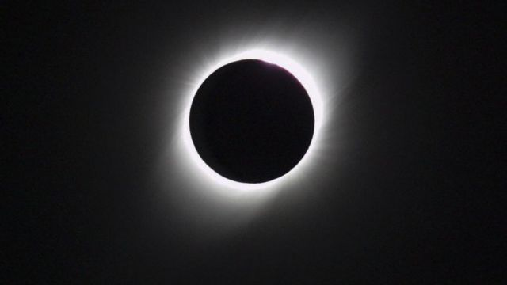
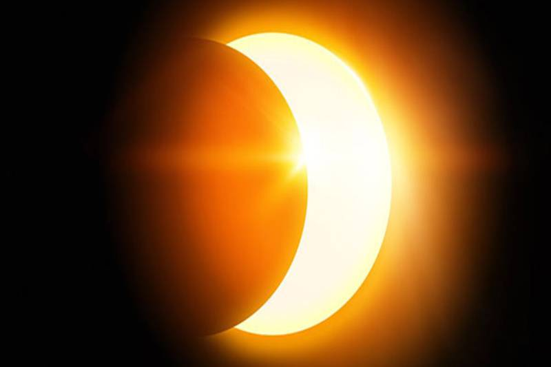
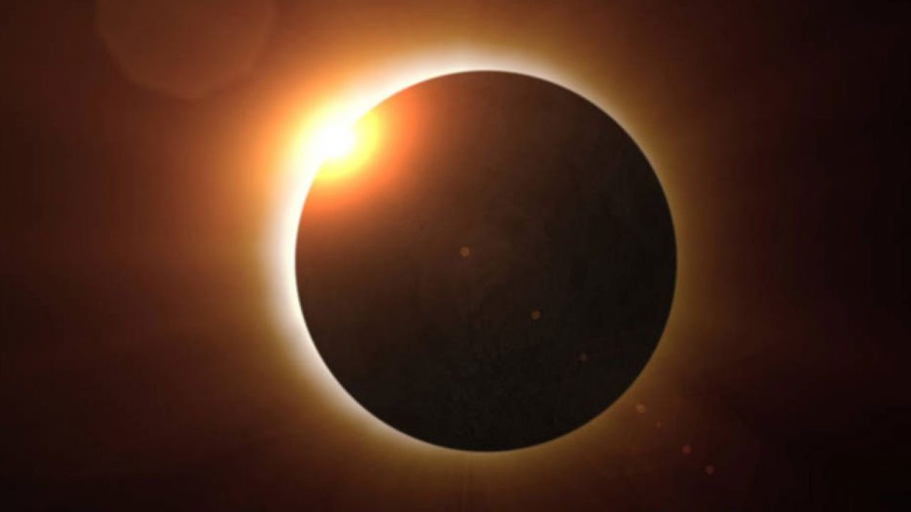

¿QUE ES ECLIPSE SOLAR?
Un eclipse solar es un fenómeno astronómico que ocurre cuando la Luna se interpone en el camino de la luz del astro solar desde su visibilidad en la tierra.Este fenómeno sucede cuando la alineación del Sol, la Luna y la Tierra están en el mismo plano. Los eclipses pueden ser de varios tipos: totales, parciales y anulares.
Los eclipses solares suelen ocurrir con la fase de luna nueva. Esta acontece cuando la Luna está muy cerca del plano de eclíptica, que viene siendo la línea curva por donde transcurre el Sol alrededor de la Tierra (visto solo desde la Tierra).

TIPOS DE ECLIPSE SOLAR
Existen tres tipos de eclipses: los eclipses totales, los eclipses parciales y los eclipses anulares.
1. Eclipse total de Sol
Ocurren cuando la Luna se posiciona entre el Sol y la Tierra, bloqueando o tapando completamente la luz del astro solar visto desde la Tierra.Este tipo de eclipses son poco frecuentes, pues la alienación del Sol, la Luna y la Tierra debe ser exacta y representan uno de los mayores espectáculos naturales que pueden observarse.Para contemplar uno de estos raros fenómenos, es necesario protegerse los ojos con técnicas como visión indirecta, como los telescopios y también con gafas especiales con cristal oscuro número 14.
2. Eclipse parcial de Sol
Los eclipses parciales de Sol suceden cuando la Luna no llega a ocultar por completo la luz solar y puede llegar a percibirse desde la Tierra como una media luna brillante. Entonces, la sombra de la Luna puede llegar a dividirse en dos regiones: umbra y penumbra.El eclipse, entonces, llega a ocurrir cuando la penumbra se proyecta sobre algunas partes de la Tierra.En un eclipse parcial del Sol, el reflejo de este, podrá verse de diferentes maneras según esté ubicado el observador. Es decir, que según el país o hemisferio donde se encuentre, la persona podrá llegar a observar el Sol casi completamente cubierto o hasta puede llegar a ver un sol creciente.
3. Eclipse Anular
Los eclipses anulares dependen de la distancia de la Tierra y la Luna, pues esta puede llegar a variar ligeramente.En los eclipses anulares, la Luna está un poco más lejos y el Sol un tanto más cerca. En esa distancia precisa, la Luna no llega a ocultar el Sol completamente, por lo que la Luna tapará el centro del Sol dejando reflejar el borde de este.Este eclipse se deja ver entonces como un anillo y por ello su nombre “anular”. Sin embargo, en las zonas alrededor del país donde este tipo de eclipse suceda, más bien, se percibirá como un eclipse parcial.
